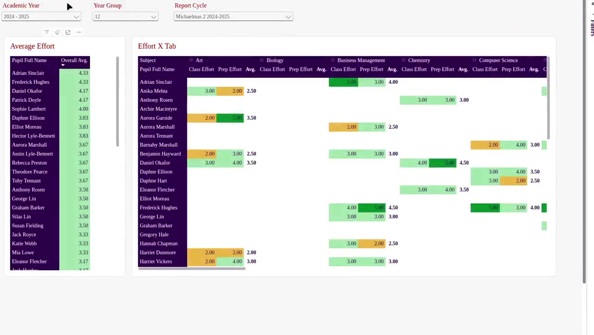

Sound familiar?
Your school already has the answers. They're just scattered.
Before you can trust a report, or ask AI anything useful, your data must be in one place, in good shape and protected. That's what we do.
- 01Your systems each hold part of the picture, and don't talk to each other.
- 02Data is exported to spreadsheets and rebuilt by hand every half-term.
- 03Departments quote different numbers for the same thing.
- 04Everyone wants AI, but nobody's sure the data is ready, or safe.
The platform
One platform that does the hard work for you
Collect
We gather everything from your MIS and other systems automatically, with a full history of where it came from.
Clean
Every record is checked. Gaps, duplicates and mismatches are caught, not passed on to your reports.
Connect
Data is organised around your pupils, staff, houses, forms and subjects, so every report starts from the same facts.
Secure
Access is built into the data. Parents see their child, tutors their form, leaders the whole school.
What it makes possible
Get the foundation right, and everything built on it improves

Reports everyone agrees on
Dashboards and printable pupil reports that refresh themselves, from the same trusted data.
See the reportsWhich Year 10 pupils have falling attendance and slipping effort this term?
An answer from your attendance and reports data, limited to pupils you can see.
Illustration
Data that's ready for AI
AI is only as good as its data. We make yours complete, clean, explained and safely permissioned.
Why AI needs thispupilone row per pupil
attendanceevery session
reportsevery grade, every cycle
Your data, easy to use
All your school's data, easily accessible in Excel or your own tools.
About the platformSecure by design
Everyone sees exactly what they should
Access follows your school's structure and staff records. If anything doesn't check out, access is refused. The same rules apply to every report and AI tool.
How we protect pupil dataWhole school · senior leaders and governors
House · heads of house
Form · tutors
Pupil · their parentsPupilPupil
Why Falcon Reports
Built by people who know schools and data
Only independent schools
We work only with independent schools, so we understand your systems, reporting cycles and questions.
From inside the sector
Experience of school leadership and data management, combined with years of building secure cloud platforms.
Always up to date
Hosted securely in the cloud and refreshed regularly throughout the day, so your data is always easy to reach.
See what your school's data could look like
We'll walk you through the platform and reports, and the questions you need answered.